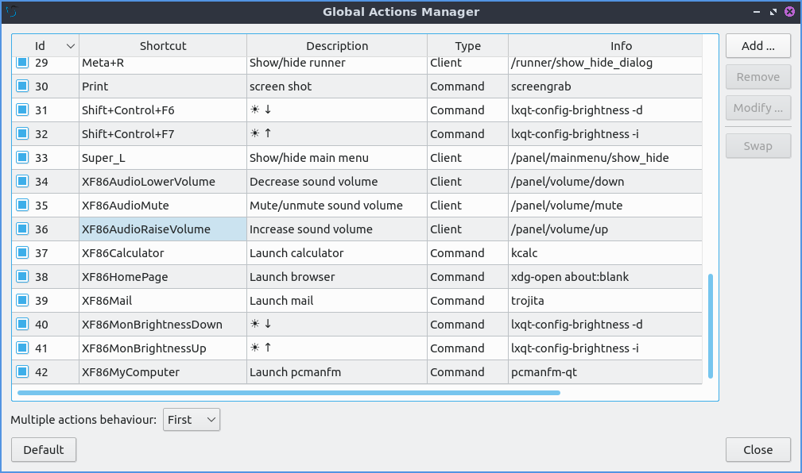
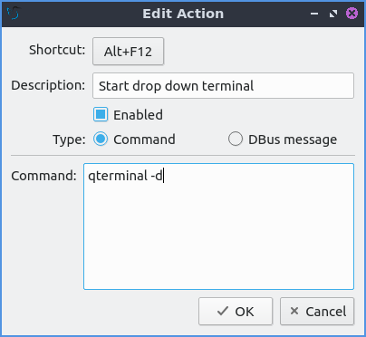

Chapter 3.2.14 Shortcut Keys¶
Shortcut Keys is the program that manages the global hotkeys or keyboard shortcuts for Denios-OS.
Note
The keyboard shortcuts are also managed by Openbox. Refer to Appendix F for more detail.
Usage¶
You can Modify a current keyboard shortcut by selecting the shortcut from the keyboard table, clicking the Modify button, then clicking on the shortcut button. A countdown will begin during which you should push the keyboard shortcut combination you want.
You can Remove a keyboard shortcut by selecting the shortcut from the keyboard table, and clicking the Remove button. To swap to shortcut keys you can select two shortcuts with Control+ Left Click then left click on the Swap button.
You can Add a new keyboard shortcut clicking the Add button. The shortcut field will be blank, click the Shortcut button to start the countdown, then press the keyboard shortcut combination you want to assign. Write a short description of what the keyboard shortcut does, for example “start drop down terminal”, or “increases screen brightness” in the Description field so you know what this shortcut does in the future. To make this execute a terminal command select the Command radio button and enter the command. To restore keyboard shortcuts to default press the Default button.
To see what previous keyboard shortcuts use their are several columns to see what keyboard shortcuts do. To see what number of each keyboard shortcut look at the Id column. To see what keyboard to press look at the Shortcut column. To see what the shortcut does look at the Description column. To see what type of keyboard shortcut view the Type column. To see what command or what the shortcut will do view the Info column.
To close Shortcut Keys press the Escape key or press the Close button.
Screenshots¶
 Version¶
Denios-OS ships with version 1.1.0 of Shortcut Keys.
How to Launch¶
To launch Shortcut Keys from the menu . The icon for Shortcut Keys button looks like a keyboard. To launch Shortcut Keys from the command line run
lxqt-config-globalkeyshortcuts